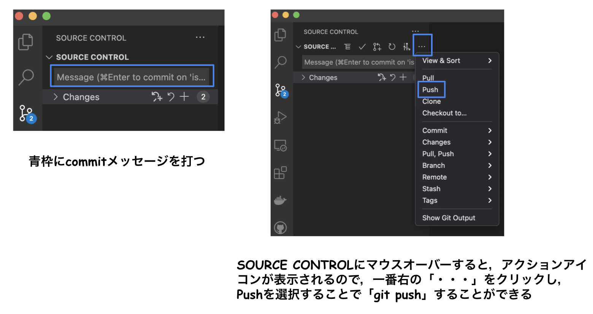

はじめに
今まで仕事では，開発環境としてIntelliJを使っていたのですが，最近はVSCodeの人気が高くExtensionsも便利なものが多くあるということで，個人的な作業をする時はVSCodeを使ってみようと思って使っています．
そんな中で，タイトルにもあるようにVSCodeからgit pushしようとしたら，<アカウント名>@github.com: Permission denied (publickey).とエラーが出たので，それを解消してVSCodeでgit pushできるようにした備忘録になります．
エラー原因（SSH接続エラー）
Permission denied (publickey)とあり，GitHubにSSH接続するために，公開鍵を登録しておかないといけないのですが，それをしていなかったので，エラーが発生したということになります．
以下のコマンドを打つことで接続を確認することができます．
ssh -T git@github.com
> git@github.com: Permission denied (publickey).
ではどうすればいいかというと，鍵を生成してGithubに登録すればいいということになります．
公開鍵と秘密鍵の作成
詳細な作成方法はこちらの記事が参考になります．
簡単に手順を載せておきます．
cd ~/.ssh
ssh-keygen -t rsa -b 4096 -C "<メールアドレス>" -f github_rsa # オプションをいくつか設定して，鍵を生成
# 以下実行結果（一部マスクしてます）
Generating public/private rsa key pair.
Enter passphrase (empty for no passphrase):
Enter same passphrase again:
Your identification has been saved in github_rsa.
Your public key has been saved in github_rsa.pub.
The key fingerprint is:
SHA256:xxxxxxxxxxxxxxxxxxxxxxxxxxxxxxxxxxxxxxxxxx <メールアドレス>
The key's randomart image is:
+---[RSA 4096]----+
|=== |
|.B o . |
|o.. . * . o |
|. . . B +. oo .o*|
| . o * OSo.oooo*+|
| . = + = o ..*..|
| E . . o . . ..|
| . . |
| |
+----[SHA256]-----+
鍵の種類をRSAにし，鍵の長さを4096にしています．ファイル名はgithub_rsaと設定しました．
Githubに生成した公開鍵を登録
cd ~/.ssh
ssh-add -K github_rsa # 秘密鍵をssh-agentデーモンに登録
pbcopy < github_rsa.pub # pbcopyコマンドで公開鍵の中身をクリップボードにコピー
この後は，コピーした公開鍵の中身をGithubに登録します．
GithubのアカウントからSettingsに進み，SSH and GPG keysを選択し，New SSH keyを押して，先程コピーした中身をペーストし，名前を決めて保存します．
SSH接続確認
保存が完了したら，SSH接続できるか確認するために，以下のコマンドを打って確認します．
ssh -T git@github.com
>Hi <ユーザー名>! You've successfully authenticated, but GitHub does not provide shell access.
Remote設定の上書き
ここまで来たら後一息で，最後にremoteの設定を上書きします． 以下のような感じでリポジトリ名を書いて，実行すればOK．
git remote set-url origin git@github.com:<ユーザー名>/<リポジトリ名>.git
VSCodeからgit push

今までの設定が完了していれば，上記画像の手順でVSCodeの画面から簡単にgitにcommitやpushなどの操作を行うことができます．
さいごに
まだまだVSCode初心者なので，使いやすいExtensionsを取り入れて開発環境をカスタマイズしていきたいと思います！